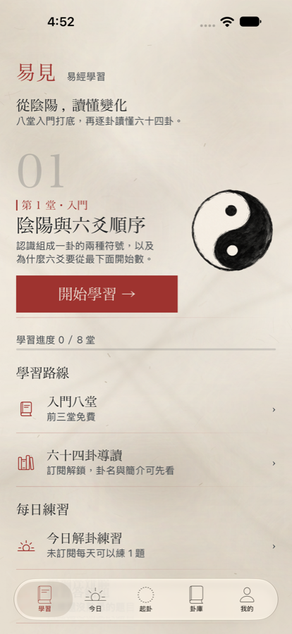
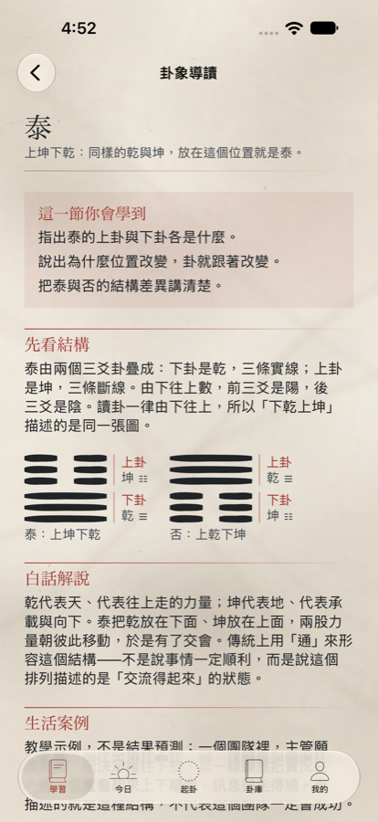
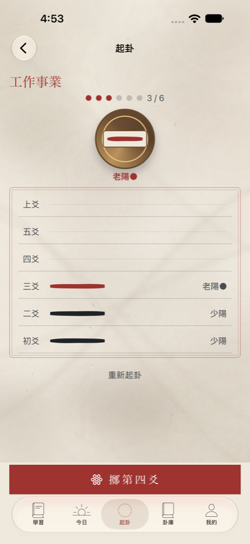

易見｜從零學易經
八堂課讀懂六十四卦的 iPhone App・繁體中文／English
已送 App Store 審核，尚未上架易見是一套《易經》的入門課程。八堂互動課從陰陽與爻序講起，再帶你逐卦讀完六十四卦：每一卦都有上下卦圖解、白話解說、教學案例與理解題。學過的內容會排進複習，答錯的題目收進錯題本。前三堂完整免費，不需要帳號。



適合誰
- 想讀懂《易經》，但看到古文和卦象就卡住的初學者。
- 聽過「六十四卦」「動爻」「之卦」，想弄清楚它們到底怎麼來的人。
- 想要有系統地學，而不是只看一句籤詩式結論的人。
- 想用中文或英文學易經的人，兩種語言內容完整對應。
八堂入門課在教什麼
- 陰陽與爻序：陽爻、陰爻長什麼樣，六爻為什麼由下往上讀。
- 八個三爻卦：乾、坤、震、巽、坎、離、艮、兌，三條線怎麼組成八種符號。
- 六十四卦怎麼組成：上卦疊下卦，八乘八得到六十四卦。
- 動爻：哪些爻會變、為什麼會變。
- 本卦與之卦：動爻翻過來之後，得到的新卦怎麼讀。
- 卦辭與爻辭：原文在說什麼、該怎麼對應到卦象。
- 怎麼讀，以及讀不到什麼：一卦能給你的角度，和它不能回答的事。
- 完整案例練習：從起卦到解讀，把前面學的串起來走一遍。
每一堂都有一個要動手的互動，例如點爻、組上下卦、找動爻、判斷之卦、挑出合理的讀法。答錯會說出錯在哪、正解是什麼，不是只告訴你對或錯。前三堂免費，第 4～8 堂為會員內容。
六十四卦逐卦導讀
六十四卦全部到齊。每一卦都包含：
- 這一節要學會什麼（學習目標）。
- 上下卦怎麼疊起來的結構圖。
- 白話解說，以及一個標明為教學示例的案例。
- 可以動手操作的卦象：交換上下卦或翻一爻，看卦名怎麼跟著變。
- 三題理解題，每個選項都有解說。
卦名、上下卦、動爻與之卦全部由卦象即時推算，不是寫死的文字，所以不會出現「圖是這一卦、文字說另一卦」的情況。
複習與錯題本
學過的內容會依時間排進複習，答錯的題目自動收進錯題本，隔一段時間再問你一次，幫你真的記住，而不是看過就忘。
問卦（練習用的次要功能）
學完之後可以自己起一卦。畫面上是一枚銅錢連擲三下得到一爻，共擲六次組成一卦，計算方式與傳統三錢法相同；銅錢落定後，錢面會印出得到的那一爻，和下方列表的線一模一樣。App 會算出本卦、動爻與之卦，並依朱熹《易學啟蒙》的變占規則決定主讀爻。這是反思用的角度，不是預測，也不是任何形式的保證。
原文出處清楚標示
六十四卦的卦辭與爻辭都取自公有領域的維基文庫，逐卦標明來源條目與引用的版本編號，你可以自己回去查證原文。
和一般占卜 App 的差別
- 先教你讀：主體是課程與導讀，不是一次性的結果頁。
- 有來源：每段古文都標明出處與版本。
- 算給你看：卦象怎麼來、動爻怎麼變，都由程式推算並畫出來。
- 不保證結果：不寫吉凶保證，不做預測。
- 不收集資料：不需要帳號、不上傳、不做雲端同步。
名詞小辭典
- 爻（yáo）
- 組成卦的線。一條完整的長橫是陽爻，中間斷開的兩短橫是陰爻。
- 三爻卦（八卦）
- 三條爻疊成的符號，一共八種：乾、坤、震、巽、坎、離、艮、兌。
- 六十四卦
- 兩個三爻卦上下疊起來，共六爻，八乘八得到六十四種。
- 動爻
- 起卦時會變的爻。老陽會變成陰，老陰會變成陽。
- 本卦與之卦
- 本卦是起出來的卦；把動爻翻過來得到的新卦就是之卦。
- 卦辭與爻辭
- 《易經》原文中解釋整卦的文字叫卦辭，解釋單一爻的文字叫爻辭。
免費與會員
免費：入門前三堂完整課程（課文、互動、測驗與進度保存都不打折）、六十四卦卦名與簡介、起卦看基本結果、每日一卦、卦庫瀏覽。
會員（台灣月繳 NT$120／年繳 NT$990，自動續訂）：入門第 4～8 堂、六十四卦完整導讀與理解題、無限次完整解卦、完整卦義、每日一卦完整解說。退訂後學習紀錄不會刪除，前三堂仍可使用。
隱私
不需要帳號、不上傳、不做雲端同步。學習進度與問卦記錄只存在你的裝置上，開發者收不到任何記錄。刪除全部記錄前會要求驗證 Face ID 或裝置密碼。
常見問題
- 有沒有適合初學者學易經的 App？
- 易見專為零基礎設計，從陰陽講起，每堂都有互動和測驗，前三堂免費。
- 學易經要先懂什麼？
- 不用任何基礎。第一堂從陰爻、陽爻和爻的順序講起。
- 易見跟一般占卜 App 有什麼不同？
- 易見以課程為主，卦象由程式推算，原文標明出處，答錯會解說原因。
- 易見可以算命或預測未來嗎？
- 不能。問卦功能只是讓你練習讀卦的反思角度，不是預測，也不是任何形式的保證。
- 支援哪些語言？
- 繁體中文與英文，所有課程與解說都可在 App 內切換。
- 需要網路或帳號嗎？
- 不需要帳號，資料也不會上傳。
- 易見在哪裡下載？
- 易見已送 App Store 審核，上架後會在這一頁放上下載連結。
YiJian — Learn the I Ching from zero
YiJian is an iPhone course for complete beginners who want to understand the I Ching (Yijing, the Book of Changes). Eight interactive lessons start with yin and yang and the order of lines; then you read all 64 hexagrams one by one, each with a trigram diagram, a plain-language explanation, a worked example and comprehension questions. Spaced review and a mistakes notebook help it stick. The first three lessons are free, and no account is needed.
Who it is for
- Beginners who get stuck on classical Chinese and hexagram symbols.
- Anyone who has heard of "64 hexagrams", "changing lines" or "resulting hexagram" and wants to know how they actually work.
- Learners who prefer a structured course over a one-line oracle answer.
- People learning in English or Traditional Chinese — both versions are complete.
The eight beginner lessons
- Yin and yang, and line order (lines are read from the bottom up).
- The eight trigrams: Qian, Kun, Zhen, Xun, Kan, Li, Gen, Dui.
- How the 64 hexagrams are built from an upper and a lower trigram.
- Changing lines: which lines change and why.
- The primary hexagram and the resulting hexagram.
- Judgments and line texts: what the classical text says and how it maps to the figure.
- How to read — and what a reading cannot tell you.
- A full worked case from casting to interpretation.
Every lesson includes a hands-on exercise — tap a line, build a hexagram from trigrams, find the changing lines, work out the resulting hexagram, pick a reasonable reading. Wrong answers explain what went wrong and what the right answer is.
The 64-hexagram guided reading
All 64 hexagrams, each with learning goals, a trigram structure diagram, a plain-language explanation, a worked example labelled as a teaching example, an interactive figure (swap the trigrams or flip a line and watch the name change) and three comprehension questions with explanations. Names, trigrams, changing lines and resulting hexagrams are computed from the figure, so the diagram and the text always agree.
Casting, as practice
After learning, you can cast a hexagram yourself: one coin tossed three times produces one line, six times in total, using the same arithmetic as the traditional three-coin method. When the coin settles, its face shows the line you got. The app computes the primary hexagram, changing lines and resulting hexagram, choosing the main line by the rules in Zhu Xi's Yixue Qimeng. It is a perspective for reflection, not prediction or a guarantee of any kind.
Sources you can check
Judgments and line texts come from public-domain Wikisource, with the source entry and revision cited for every hexagram.
Free and membership
Free: the first three lessons in full, hexagram names and summaries, basic casting results, a daily hexagram and the hexagram library. Membership (NT$120 per month or NT$990 per year in Taiwan, auto-renewing) unlocks lessons 4–8, the full 64-hexagram course and quizzes, unlimited full readings and full daily explanations. Your learning history is kept if you cancel.
Privacy
No account, no uploads, no cloud sync. Progress and history stay on your device; the developer receives nothing.
FAQ
- What is a good app to learn the I Ching as a beginner?
- YiJian is built for complete beginners: eight interactive lessons from yin and yang upward, then all 64 hexagrams. The first three lessons are free.
- Do I need any background?
- No. Lesson one starts with yin lines, yang lines and the order of lines.
- Does YiJian predict the future?
- No. Casting is a practice feature that offers a perspective for reflection, not prediction.
- Which languages are supported?
- English and Traditional Chinese, switchable inside the app.
- Where can I download it?
- YiJian is in App Store review; a download link will appear on this page once it is available.